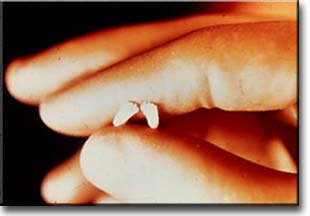

Isa 59:17 For he put on righteousness as a breastplate, and an helmet of salvation upon his head; and he put on the garments of vengeance for clothing, and was clad with zeal as a cloke.
Grace is exceeding gracious
Isa 59:16 And he saw that there was no man, and wondered that there was no intercessor: therefore his arm brought salvation unto him; and his righteousness, it sustained him.
It was purely for His own name's sake; because there was nothing in them either to bring it about, or to trust Him to bring it about for them, no merit to deserve it, no might to effect it, He would do it Himself, He would be exalted in His own strength, for His own glory.
Isa 59:19 So shall they fear the name of the LORD from the west, and his glory from the rising of the sun. When the enemy shall come in like a flood, the Spirit of the LORD shall lift up a standard against him.
Sin is exceeding sinful
Isa 59:1 Behold, the LORD'S hand is not shortened, that it cannot save; neither his ear heavy, that it cannot hear:
2 But your iniquities have separated between you and your God, and your sins have hid his face from you, that he will not hear.
3 For your hands are defiled with blood, and your fingers with iniquity; your lips have spoken lies, your tongue hath muttered perverseness.
4 None calleth for justice, nor any pleadeth for truth: they trust in vanity, and speak lies; they conceive mischief, and bring forth iniquity.
5 They hatch cockatrice' eggs, and weave the spider's web: he that eateth of their eggs dieth, and that which is crushed breaketh out into a viper.
6 Their webs shall not become garments, neither shall they cover themselves with their works: their works are works of iniquity, and the act of violence is in their hands.
7 Their feet run to evil, and they make haste to shed innocent blood: their thoughts are thoughts of iniquity; wasting and destruction are in their paths.
8 The way of peace they know not; and there is no judgment in their goings: they have made them crooked paths: whosoever goeth therein shall not know peace.
Php 3:6 Concerning zeal, persecuting the church; touching the righteousness which is in the law, blameless.
God is longsuffering with the wicked every day!!! ARE YOU?
God is angry with the wicked every day!!! ARE YOU?
Ps 7:11 God judgeth the righteous, and God is angry with the wicked every day.
Ps 7:12 If he turn not, he will whet his sword; he hath bent his bow, and made it ready.
The longsuffering of God, whose hatred of sin is unchangeable, but whose anger against transgressors is marked by infinite patience, though angry, does not burst forth in vengeance every day.
Ro 2:4 Or despisest thou the riches of his goodness and forbearance and longsuffering; not knowing that the goodness of God leadeth thee to repentance?
9:22 What if God, willing to shew his wrath, and to make his power known, endured with much longsuffering the vessels of wrath fitted to destruction:
Col 3:12 Put on therefore, as the elect of God, holy and beloved, bowels of mercies, kindness, humbleness of mind, meekness, longsuffering;
2Pe 3:9 The Lord is not slack concerning his promise, as some men count slackness; but is longsuffering to us-ward, not willing that any should perish, but that all should come to repentance.
20 Which sometime were disobedient, when once the longsuffering of God waited in the days of Noah, while the ark was a preparing, wherein few, that is, eight souls were saved by water.
How longsuffering true love is?
How angry true love is?
2Co 5:11 Knowing therefore the terror of the Lord, we persuade men; but we are made manifest unto God; and I trust also are made manifest in your consciences.
Ps 50:3 Our God shall come, and shall not keep silence: a fire shall devour before him, and it shall be very tempestuous round about him.
ABORTION
Ec 8:11 Because sentence against an evil work is not executed speedily, therefore the heart of the sons of men is fully set in them to do evil.
Ps 50:16 But unto the wicked God saith, What hast thou to do to declare my statutes, or that thou shouldest take my covenant in thy mouth?
17 Seeing thou hatest instruction, and castest my words behind thee.
18 When thou sawest a thief, then thou consentedst with him, and hast been partaker with adulterers.
19 Thou givest thy mouth to evil, and thy tongue frameth deceit.
20 Thou sittest and speakest against thy brother; thou slanderest thine own mother's son.
21 These things hast thou done, and I kept silence; thou thoughtest that I was altogether such an one as thyself: but I will reprove thee, and set them in order before thine eyes.
22 Now consider this, ye that forget God, lest I tear you in pieces, and there be none to deliver.
23 Whoso offereth praise glorifieth me: and to him that ordereth his conversation aright will I shew the salvation of God.
If moral formalists had been rebuked, how much more these immoral pretenders to fellowship with heaven? If the lack of heart spoiled the worship of the more decent and virtuous, how much more would violations of the law, committed with a high hand, corrupt the sacrifices of the wicked?
The altar of self will
Self–preservation is natural self-sacrifice is supernatural self-destruction is a sin
1Co 15:8 And last of all he was seen of me also, as of one born out of due time.
Ac 9:17 And Ananias went his way, and entered into the house; and putting his hands on him said, Brother Saul, the Lord, even Jesus, that appeared unto thee in the way as thou camest, hath sent me, that thou mightest receive thy sight, and be filled with the Holy Ghost.
Ac 22:14 And he said, The God of our fathers hath chosen thee, that thou shouldest know his will, and see that Just One, and shouldest hear the voice of his mouth.
15 For thou shalt be his witness unto all men of what thou hast seen and heard.
1Co 15:8 Last of all, he appeared even to me, who am, as it were, the abortion.(TCNT)
ektrwma ektroma, ek'-tro-mah
from a comparative of 1537 and titrosko (to wound); a miscarriage (abortion), i.e. (by analogy) untimely birth:--born out of due time.
PAST--- Post Abortion Stress Trauma
So, what is post-abortion stress/trauma?
PAS/T is a condition which can occur in both men and women after the abortion experience, due to unresolved psychological, physical and spiritual aspects. Family member can also be affected. Symptoms are similar to those in any post traumatic stress disorder. Basically it is the personal struggle to work through thoughts, feelings about the abortion and previous pregnancy, and the goal to come to peace with those involved in the decision making process and ultimate loss of life. Granted some men/women are better equipped to deal with the aftermath of an abortion, but EVERYONE is changed by it! As one woman quoted: "Once I laid on that table, I was never the same!"
Symptoms of PAS/T may not appear all together. Nor will each woman/man possess all of them. If you find that you experience between 5-7 of the following emotions, following an abortion, you might consider seeking help for post abortion stress/trauma. Note sometimes these symptoms happen immediately
If you've experienced an abortion, your life may have changed in the following ways.
Symptoms of Post Abortion Stress Trauma
RU486, Mifepristone: (Abortion Pill) - Within 4 to 7 weeks after last menstrual period (LMP)
This drug is only approved for use in women up to the 49th day after their last menstrual period. The procedure usually requires three office visits. On the first visit, the woman is given pills to cause the death of the embryo. Two days later, if the abortion has not occurred, she is given a second drug which causes cramps to expel the embryo. The last visit is a follow up ultrasound to determine if the procedure has been completed.
RU486 will not work in the case of an ectopic pregnancy. This is a potentially life-threatening condition in which the embryo lodges outside of the uterus, usually in the fallopian tube. If not diagnosed early, the tube may burst, causing internal bleeding and in some cases, the death of the woman.
Manual Vacuum Aspiration: up to 7 weeks after LMP
This surgical abortion is done early in the pregnancy up until 7 weeks after the woman's last menstrual period. A long, thin tube is inserted into the uterus. A large syringe is attached to the tube and the embryo is suctioned out.
Suction Curettage: between 6 to 14 weeks after LMP
This is the most common surgical abortion procedure. Because the baby is larger, the doctor must first stretch open the cervix using metal rods. Opening the cervix may be painful, so local or general anesthesia is typically needed. After the cervix is stretched open, the doctor inserts a hard plastic tube into the uterus, and then connects this tube to a suction machine. The suction pulls the fetus' body apart and out of the uterus. The doctor may also use a loop-shaped knife called a curette to scrape the fetus and fetal parts out of the uterus. (The doctor may refer to the fetus and fetal parts as the “products of conception.”).
Abortion is not just a simple procedure; it may have many side effects. Abortion has been associated with preterm birth, emotional and psychological impact, and spiritual consequences.
Pregnancy is not the only thing to be concerned about after having sex. STDs (sexually transmitted diseases) and STIs (sexually transmitted infections) are common. Some can be cured. Some cannot. Many have lifelong effects.
HPV (human papillomavirus) is the primary cause of cervical cancer. At least 50 percent of sexually active men and women aquire genital HPV infection at some point in their lives. Most HPV infections have no signs or symptoms; therefore, most infected people are unaware they are infected, yet they can transmit the virus to a sex partner.
Chlamydia is the most frequently reported bacterial sexually transmitted disease in the United States. Any sexually active person can be infected with Chlamydia. The greater the number of sex partners, the greater the risk of infection. Because the cervix of teenage girls and young women is not fully matured, they are at particularly high risk for infection.
In women, symptoms of Gonorrhea are often mild, but most women who are infected have no symptoms. Even when a woman has symptoms, they can be mistaken for a bladder or vaginal infection. Untreated gonorrhea can cause serious and permanent health problems.
There are still over 1 million people living with HIV in the United States. About one-fourth of those have not yet been diagnosed and are unaware of their infection.
This is Dr. Russell Saco's widely distributed photo of the feet of a 10-week old aborted baby. At 10 weeks the human body is completely formed. Although the baby is small enough to stand on his/her parents' little fingernail, he/she is so perfectly formed that fingerprints are already in place.

Suction aspiration - first 12 weeks of pregnancy
Dilation and curettage (D&C) - first 12 weeks of pregnancy
RU486 and methotrexate - 5 to 7 weeks of pregnancy
Dilation and evacuation (D&E) - first 18 weeks of pregnancy
Salt poisoning (saline amniocentesis) - after four months of pregnancy
Prostaglandin abortion - four to six months of pregnancy
Hysterotomy - four to nine months of pregnancy
Partial birth (brain suction) abortion - four to nine months of pregnancy
Prior to the Roe vs. Wade Supreme Court decision of 1973, about 500,000 illegal abortions were occurring per year. By 1975, over 1,000,000 babies were being aborted in the United States. Today, about 1,500,000 abortions occur each year. That's over 4000 per day, and nearly three per minute!
Ninety-three percent of the abortions in America are for convenience. The mother's health is an issue only three percent of the time, and the baby's health is an issue only three percent of the time. Rape or incest are issues only one percent of the time. Ninety-three percent of all abortions in America are performed just because someone doesn't want a child!
There are four basic types of abortion being performed in America today, while two more types may be added in the near future.
First, there's the suction type abortion. This is where the unborn child is literally vacuumed from the mother's womb during the early stages of pregnancy.
The currette-type abortion is where the child is cut from the mother's womb with a spoon-like object.
A third type is similar to a Caesarean operation. The baby is surgically removed from the mother and allowed to suffocate, because the child's lungs aren't developed.
The fourth type of abortion is the Salt Brine technique. With this method, the unborn child is literally "pickled" to death by the injection of a strong salt solution. A few days after the injection the child is still born.
There is currently much debate about partial-birth abortions. This is where a child is partially delivered, then stabbed in the skull to have his or her brains sucked out.
There is also much talk about the RU-486 abortion pill from France, also called "mifepristione" in America. This pill works by inhibiting pregnancy hormones, and is normally used within seven weeks from conception. At the present time, mifepristone is illegal in the U.S., but there is much political pressure to make it legal.
Abortion Is An Act of Murder
In reference to pregnant women, the term "with child" occurs twenty-six times in the Bible. The term "with fetus" never occurs once.
In Luke chapter one, verses 36 and 41, we are told that Elisabeth conceived a "son" and that the "babe" leaped in her womb. God does not say that a "fetus" leaped in her womb! He says THE BABE leaped. This is the exact same word that God uses to describe Christ in the manger AFTER He is born (Luke 2:12, 16). In God eyes, an unborn babe and a newborn babe are the same. They are both living human beings!
Dear reader, please answer a question: What is an "infant?" Get the answer in your mind and keep it there for a moment. Do you have it? Okay, please consider Job 3:16: "Or as an hidden untimely birth I had not been; as infants which never saw light." Did you see that? Job referred to unborn children as INFANTS. Not fetuses! Not masses of tissue! INFANTS! In God's eyes, an unborn child is a living human baby. God never says once that an unborn child is anything less than a human being.
David said in Psalm 51:5, "Behold, I was shapen in iniquity, and in sin did my mother conceive me." He did not say that a fetus was shapen in iniquity and conceived in iniquity. David, speaking under the inspiration of the Holy Spirit, said that HE was conceived. David, not a blob of tissue, was conceived.
The same is the case in Psalm 139:13-16:
"For thou hast possessed my reins: thou hast covered me in my mother's womb. I will praise thee; for I am fearfully and wonderfully made: marvellous are thy works; and that my soul knoweth right well. My substance was not hid from thee, when I was made in secret, and curiously wrought in the lowest parts of the earth. Thine eyes did see my substance, yet being unperfect; and in thy book all my members were written, which in continuance were fashioned, when as yet there was none of them."
Who was in the womb? David! A literal and living person. The Bible never uses anything less than human terms to describe the unborn.
Notice that in Jeremiah 1:5 we are told that God KNEW Jeremiah:"Before I formed thee in the belly I knew thee; and before thou camest forth out of the womb I sanctified thee, and I ordained thee a prophet unto the nations."
To further confirm the fact that God views the unborn child as a person, please consider Exodus 21:22-23:
"If men strive, and hurt a woman with child, so that her fruit depart from her, and yet no mischief follow: he shall be surely punished, according as the woman's husband will lay upon him; and he shall pay as the judges determine. And if any mischief follow, then thou shalt give life for life,"
If the woman has a premature birth and the child lives ("no mischief follows"), then there's no death penalty. However, if the child dies (or the woman dies) God says the death penalty applies: "thou shalt give life for life." Why would God require the death penalty if He didn't consider the unborn child to be a human being?
Friend, like it or not, God says that life begins at conception, and the unborn child is a human being.
But the Bible isn't alone in declaring this truth. Science also declares that an unborn child is just as much an independent human being as you. The original human cell consists of 46 chromosomes, 23 from each parent. At no point during pregnancy does the mother contribute any new cells to the child. The original cell divides itself and multiplies to provide development and growth for the child. Scientifically speaking, the child is just as independent at six months before birth as he will be six months after birth. Yes, the mother does provide nourishment to the unborn child, but she also provides nourishment to the newborn child!
At two weeks pregnancy, the "fetus" can move alone. By four weeks the child has limbs, muscle tissue, a heart and heartbeat. Ears, eyes, and small hands are visible by the fifth week. The child responds to touch sensations by the sixth or seventh week. At eight weeks, the baby sometimes tries to take a breath when removed from the mother. At twelve weeks, the child will often struggle for life two or three hours when removed from the mother.
Friend, abortion is wrong because abortion is MURDER!
Abortion Involves the Shedding of Innocent Blood
Proverbs 6:16-17 says that God HATES those who shed innocent blood! Deuteronomy 27:25 says, "Cursed be he that taketh reward to slay an innocent person. And all the people shall say, Amen."
Who could possibly be more innocent than an unborn baby?! Yet, our society has become so wicked that it condones the slaying of 1.5 million innocent children every year. The Bible says that God HATES people who do this.
Abortion Is A Violation of the Golden Rule
In Matthew 7:12, the Lord Jesus Christ said, "Therefore all things whatsoever ye would that men should do to you, do ye even so to them: for this is the law and the prophets."
Would it be your desire to suffer and die while someone traps you in a cage and literally tears your arms and legs from your body?
Abortion is a violation of the golden rule.
Abortion Attempts To Destroy A Work of God
"I know that, whatsoever God doeth, it shall be for ever: nothing can be put to it, nor any thing taken from it: and God doeth it, that men should fear before him." (Ecc. 3:14)
God is eternal, so His work is also eternal. Abortion is an attempt to do away with unwanted people--an attempt to make a liar out of God by bringing an end to His work. However, Jesus said you can destroy a person's BODY, but not their SOUL (Mat. 10:28). Parent, if you've had an abortion, your aborted child is in Heaven right now, because you only destroyed the body!
Abortion Often Brings Shame, Heartache, and Deep Regret
After his sin with Bathsheba, King David confessed these words to God: "For I acknowledge my transgressions: and my sin is ever before me." (Psa. 51:3) David was living under constant conviction and regret for what he had done. He couldn't get away from it!
Most women who decide to have an abortion spend the rest of their lives regretting it. Are you thinking about an abortion? I challenge you to visit with some woman who have had abortions. Ask them if they would do it again. Ask them if they have any regrets.
In the book, The Christian and Social Issues, by Tom Wallace, a reference is made to a full page Washington Post ad, dated June 13, 1983. A lady who had undergone a saline abortion six months earlier describes the mental torments that she now suffers every day. She speaks of her "...everyday hell of never hearing a baby cry without crying within myself; counting days to see how old the baby would have been; wondering what contributions my baby would have made to our desperate society; and wondering if there will ever be another chance for motherhood."
Of the abortion itself, the lady recalls, "...sitting in a crowded waiting room studying each others fearful, anxious faces...signing death certificates for what is very much alive within you...seeing crying women given tranquilizers and sent home to recuperate and try to forget."
Abortion is wrong because it brings shame, heartache, and deep regret.
Abortion Disannuls A Plan of God
If God allows a child to be conceived, then God obviously has a plan for that child. Mary's parents didn't know that she'd give birth to the Savior of the world, but she did. God has a plan for unborn children (Jer. 1:5; Lk. 1:13-17; Gen. 4:25; Jud. 13:3-5), so to abort an unborn child is to stop a plan of God.
Abortion De-values Human Life
God created man to be the highest form of life on earth (Gen. 1:26-28). Human life is very precious to God. In fact, it is so precious that God Himself instituted the Death Penalty for anyone who takes the life of another (Exo. 21:12; Num. 35). God places great value on human life!
However, abortion promotes the message that life is NOT so valuable, and that man can do as he pleases with it. How long will it be before our nation decides that the killing of elderly people and sick people is justifiable? Why stop there? How long will it be before it becomes lawful to kill Bible believers who refuse to conform to the world system? It won't be as long as you may think (Rev. 13:16-18; Rev. 20:4). Abortion devalues human life, and it pushes our nation a step closer to that wicked day when it becomes lawful to murder innocent people.
Abortion Shows A Lack of Natural Affection
Paul tells us in 2 Timothy 3:3 that the last days will be characterized by people who lack "natural affection."
I believe the pro-abortion movement is a perfect example of this. It is NATURAL to conceive a child, grow to love that child, take care of the child during pregnancy, give birth to the child, and then raise the child with the best care possible. That's the natural process that God has ordained. It is NOT natural to kill the child! To commit such an act is to show a lack of natural affection, which is sin.
Abortion Encourages Sin
"Because sentence against an evil work is not executed speedily, therefore the heart of the sons of men is fully set in them to do evil." (Ecc. 8:11)
Ec 8:11 Because sentence against an evil work is not executed speedily, therefore the heart of the sons of men is fully set in them to do evil.
(KJV)
Why will 1,500,000 women have abortions this year? Largely because it has become popular. It is no longer illegal, and it is no longer considered a shameful sin by our society. Every time a woman has an abortion she helps society to become more comfortable with it. She's advertising it! By her example, she's encouraging others to commit the same sin, and other sins as well. The convenience of abortion will only lead to an increase of other sins such as adultery and fornication. Friend, abortion is wrong because abortion encourages sin!
Abortion Shows A Lack of Faith
Romans 14:23 says, "...for whatsoever is not of faith is sin." Hebrews 11:6 tells us that without faith it is IMPOSSIBLE to please God.
To have an abortion is to take matters into your own hands, rather than to trust God to work things out. This shows a lack of faith in God, which the Bible labels as SIN.
A desperate woman says, "I can't afford to have a child. I'm not ready for this." Lady, you need to start trusting God and claiming His promises. You need to STOP trying to run your own life for a change and START trusting God. You don't need an abortion, for such will only INCREASE your troubles. The devil has you thinking that abortion is the answer, that it will take care of everything, and you're very close to giving in to his subtle temptation. If you do, you'll regret it forever, and God will hold you accountable! Why not turn your life over to the Lord Jesus Christ right now? Why not make Him the Lord of your life and trust Him to work things out for you?
You Can Be Saved Right Now!
Jesus Christ came into this world to lay down His sinless life for YOU--to pay for your sins, because you couldn't. Jesus is your only hope for salvation. Only by receiving Him as your Savior can you enter the gates of Heaven. There is no other way.
"Jesus saith unto him, I am the way, the truth, and the life: no man cometh unto the Father but by me." (John 14:6)
"Neither is there salvation in any other: for there is none other name under heaven given among men, whereby we must be saved." (Acts 4:12)
The Lord Jesus Christ has come and PAID for your sins by shedding His own Blood on Calvary. By receiving Him as your Savior, you can be WASHED from all your sins in His precious Blood (Rev. 1:5; Col. 1:14; Acts 20:28; I Pet. 1:18-19). Notice these important words from Romans 5:8-9:
"But God commendeth his love toward us, in that, while we were yet sinners, Christ died for us. Much more then, being now justified by his blood, we shall be saved from wrath through him."
Jesus PAID your way to Heaven for you! By receiving Him as your Savior, you will be receiving God's ONLY means of Salvation for you. Are you willing to forsake YOUR righteousness and receive Jesus Christ as your Savior, your ONLY HOPE for Salvation? Romans 10:13 says, "Whosoever shall call upon the name of the Lord shall be saved." Romans 10:9 says, "That if thou shalt confess with thy mouth the Lord Jesus, and shalt believe in thine heart that God hath raised him from the dead, thou shalt be saved." Are you willing to forsake your own righteousness, and trust Jesus Christ alone? He will save you just as He promised. Why not receive Him today and trust Him to give you a better way of life?